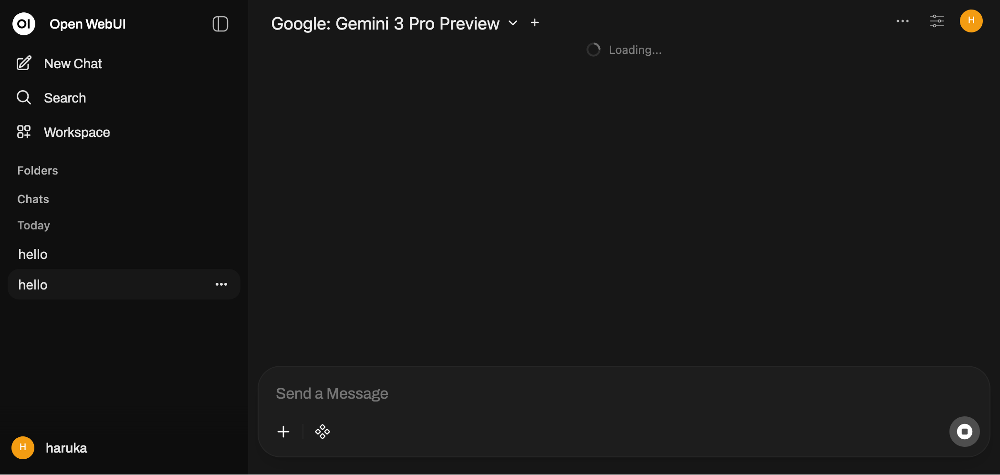
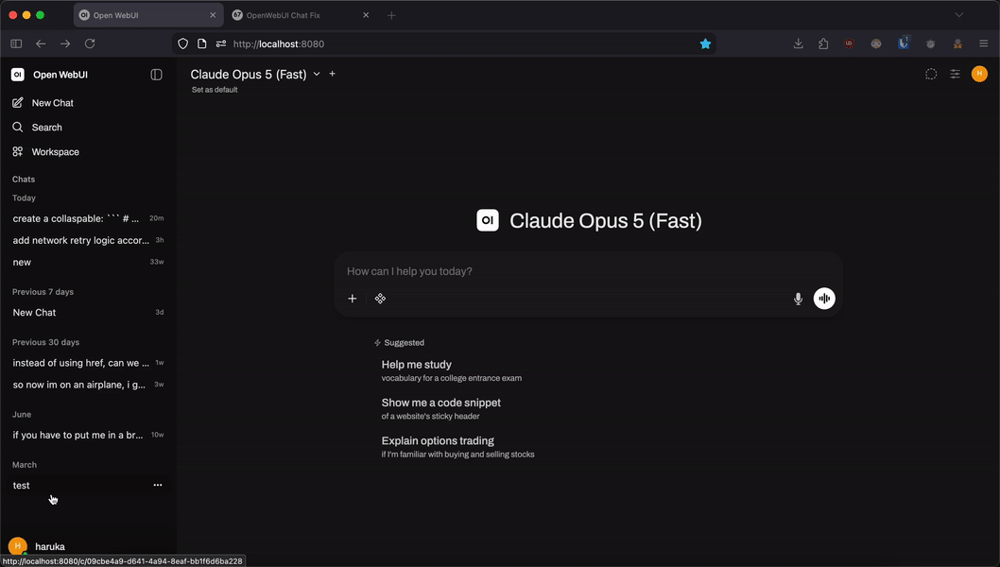

🙀
OpenWebUI Chat Fix (and Cleaner!)
Saves your OpenWebUI chat from spinning indefinitely

Don't know how to use?
- Open the broken chat →
...menu → Export → JSON. - Drop the exported file into the zone below.
- Click repair to download the fixed JSON.
- In OpenWebUI, go to Settings → General → Import Chats → select the fixed file.
- Confirm it loads successfully, then delete the broken original.

🔍 Click GIF to open full sizeClick here to upload / drag JSON file here